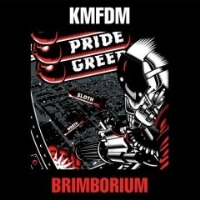

Brimborium (2008)
Ultra Heavy BeatWorld
| Artist | KMFDM |
|---|---|
| Year | 2008 |
| Genre | Ultra Heavy Beat, World |
| Tracks | 14 |
Track List
| 1 | Tohuvabohu (Combichrist MS-20) | 4:46 |
| 1 | Tokuvabohu [Ms-20 Mix] | 5:22 |
| 2 | Looking For Strange (Die Krupps Super Strange) | 5:27 |
| 3 | Superpower (Kapt'n K Buttfunk) | 4:13 |
| 4 | Headcase (Jules Hodgson Hallowe'en) | 4:25 |
| 5 | Tohuvabohu (Angelspit Ex Nihilo) | 4:46 |
| 6 | I Am What I Am (Steve White The One & Only) | 6:26 |
| 7 | Looking For Strange (Velox Music All Strung Up) | 6:31 |
| 8 | Saft Und Kraft (DJ?Acucrack Saft Und Crack) | 5:47 |
| 9 | Not In My Name (16 Volt Check Yourself) | 5:40 |
| 10 | Headcase (Angelspit Fix) | 4:14 |
| 11 | Spit Or Swallow (Velox Music Electric Stomp) | 4:54 |
| 12 | You're No Good (Zombie Girl Zomb'd Out) | 6:46 |
| 13 | What We Do For You | 9:14 |